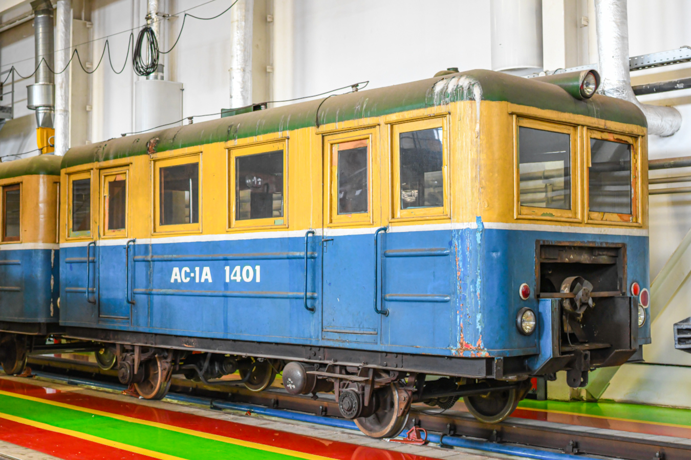
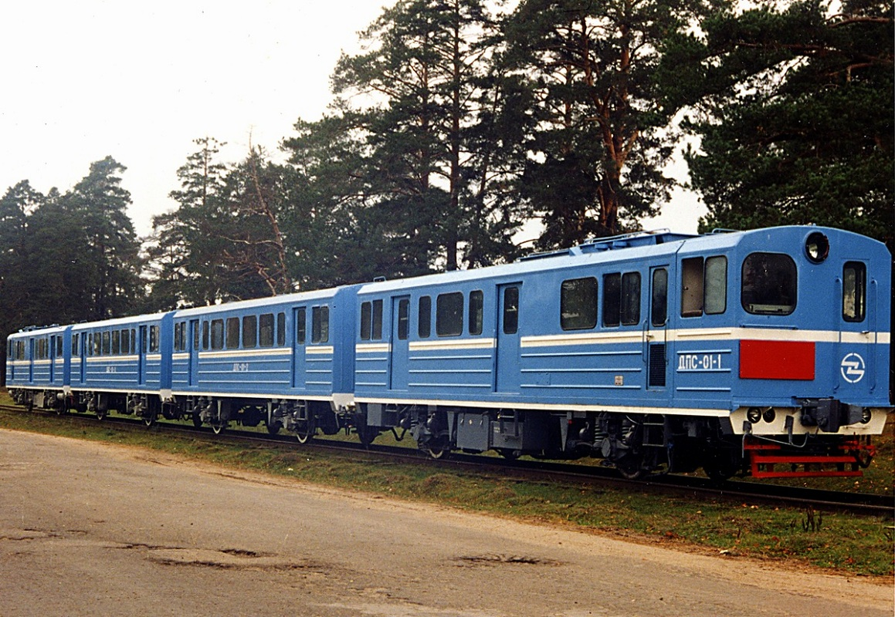

Легенды и мифы Московского метрополитена
Московское метро — это не только транспорт, но и огромный подземный мир, окутанный тайнами и легендами. Условно всё мифологическое наследие метро можно разделить на несколько тематических групп.
От секретной системы «Метро-2» до призраков на станциях и поездов-призраков в тоннелях — каждая легенда имеет свои корни и объяснения.
1. Исторические тайны и «Метро-2»
Самая известная и устойчивая легенда — существование секретной системы тоннелей «Метро-2».
Считается, что эта сеть, строившаяся со сталинских времён, соединяет правительственные бункеры, командные пункты и другие стратегические объекты. Название Д-6 (условное обозначение секретной линии), бункер в Измайлово или на Таганке стали символами этой скрытой от глаз инфраструктуры.
Несмотря на отсутствие официальных подтверждений, многочисленные свидетельства строителей и косвенные данные придают этой легенде статус полуофициальной истины.
Имеются фото перегонки подвижного состава, которые не выходят на линию (либо очень редко). Иногда составы можно увидеть в обычном депо, но это редкость.
Известный подвижной состав «Метро-2»

📸 ???

📸 mosnikita

📸 Lasselan
2. Призраки и потусторонние обитатели
🖤 Чёрный тоннельщик
Самое известное мифическое существо — призрак в замасленной робе, появляющийся в конце платформ или в хвосте уходящего поезда.
👤 Призрак Сталина
На станции «Курская»-кольцевая ходят слухи о призраке И.В. Сталина, который будто бы появляется у убранного во время хрущёвской оттепели бюста вождя на памятной надписи в вестибюле.
3. Поезд-призрак
Легенда гласит, что по тоннелям Московского метро поздно ночью, когда движение обычных поездов прекращается, можно увидеть странный состав, который не значится ни в одном расписании.
👁️ Внешний вид
Чаще всего это старый состав из вагонов типа «Е» (есть версии про «А» или «81-717»), покрашенный в тёмно-синий или тёмно-зелёный цвет.
🌑 Особенности
Он движется без света в салонах, бесшумно или с нехарактерным для метро звуком. По поводу составности есть разные варианты: где-то 2, 4, 5, 7 вагонов.
Происхождение и возможные объяснения
1. Служебные и перегоночные поезда — это самая логичная и официальная версия. В метро действительно курсируют специальные составы, не предназначенные для перевозки пассажиров:
- Еж3-путеизмеритель: этот поезд подходит под описание Е-образного, в одном из вагонов сохранился оригинальный салон. Так что его можно легко перепутать.
- Перегонка: иногда из различных депо старые вагоны перегоняются в ТЧ-16 на утилизацию (в основном). Как правило, это старые вагоны. Лучше всего под определение подходит перегонка: НГ ежа, 10164/10167 и ещё некоторых других.
- Обкатка ретро-поезда серии «А»: он является самым старым составом, который эксплуатируется, так же он подходит по виду.
4. Станции-призраки и заброшенные проекты
Помимо «Метро-2», в Московском метрополитене есть станции, которые либо были закрыты, либо так и не открылись для пассажиров. Они стали объектами urban exploration и новых легенд.
🚫 «Советская» (Замоскворецкая линия)
Построена в 1930-х, но не открыта из-за сложного расположения. Используется как служебная. Ходят легенды о законсервированных мозаиках и оригинальном убранстве.
🚫 «Первомайская» (старая)
Была конечной на Арбатско-Покровской линии с 1954 по 1961 год. После открытия новой «Первомайской» старую закрыли. Сейчас используется как склад и техническая зона.
🚫 «Калужская» (старая)
Открыта в 1964 году, закрыта в 1974 после открытия новой «Калужской». Долгое время использовалась как склад, сейчас — техническая зона.
🚫 «Ленинские горы» (старая)
Открыта в 1959 году как «Ленинские горы», закрыта в 1983 после открытия новой станции. Сейчас используется для служебных целей.
🚫 Д-6 (условная линия Метро-2)
Секретная линия, соединяющая Кремль, Генштаб, бункеры в Измайлово и Таганке. Официально не подтверждена, но косвенные данные указывают на её существование.
🚫 Заброшенные проекты
Метро в Одессе, Ростове-на-Дону, Красноярске, Омске, Перми, Челябинске — проекты, которые так и не были реализованы или заморожены.
5. Городские легенды и курьёзы
🪜 Легенда об эскалаторе
Говорят, что если наступить на определённую ступеньку эскалатора на станции «Парк Победы», можно загадать желание — оно сбудется.
🐇 Метро-зайцы
Легенда о «зайцах», которые живут в тоннелях метро и питаются остатками еды пассажиров. Иногда их видят работники станций.
🎫 Потерянные вещи
В метро существует «комната забытых вещей», где хранятся тысячи предметов. Легенда гласит, что среди них есть вещи, которым больше 50 лет.
👁️ Станция-невидимка
Легенда о станции, которую можно увидеть только в определённое время суток или при определённом освещении. Обычно упоминают «Советскую».
🎵 Музыка тоннелей
Машинисты рассказывают, что в некоторых тоннелях слышны странные звуки, похожие на музыку или пение. Это объясняют резонансом вентиляции.
🐈 Кот-хранитель метро
Легенда о коте, который живёт на одной из станций и приносит удачу пассажирам, которые его встретят.
«Метро — это не только транспорт. Это подземный мир, где реальность переплетается с легендами, а каждый тоннель хранит свою тайну».